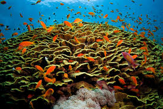

Marine ecosystems are essential to the health of our planet. Below is a detailed table presenting data on several prominent coral reefs. It covers key information such as the reef name, number of marine species, current pollution levels, and the conservation efforts in place. Explore the data and click "Learn More" to discover additional insights.
| Coral Reef | Marine Species | Pollution Levels | Learn More | |
|---|---|---|---|---|
| Image | Reef Name | Species Count | Pollution | More Info |
| Great Barrier Reef | 1500 species | Low ✅ | Learn More | |
|  | Red Sea Coral Reef | 1200 species | Moderate ⚠ | Learn More |
| Mesoamerican Reef | 1100 species | High ❌ | Learn More | |
| New Caledonian Barrier Reef | 1300 species | Low ✅ | Learn More | |
| Andros Barrier Reef | 950 species | Moderate ⚠ | Learn More | |
| Florida Reef | 800 species | High ❌ | Learn More | |
| Tubbataha Reefs | 700 species | Low ✅ | Learn More | |
| Bonaire Marine Park | 650 species | Moderate ⚠ | Learn More | |
| Note: Data is indicative and reflects ongoing environmental assessments and conservation efforts. | ||||